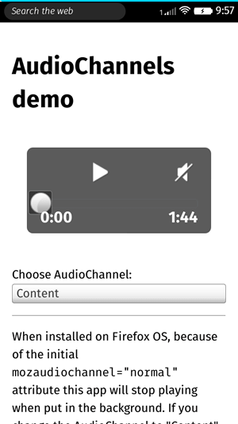
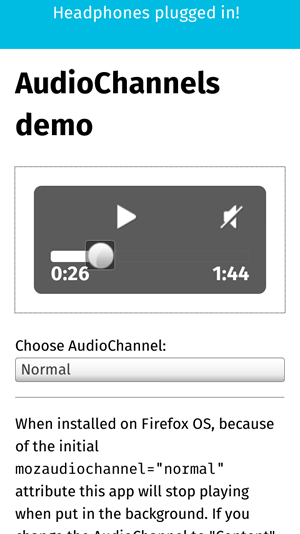

Non-standard
This feature is not on a current W3C standards track, but it is supported on the Firefox OS platform. Although implementations may change in the future and it is not supported widely across browsers, it is suitable for use in code dedicated to Firefox OS apps.
The Audio Channels API is a currently-Firefox OS-only feature allowing you to place your app's audio content into a hierarchy of importance, which dictates when the audio will be paused and resumed in response to other audio playing and actions occurring and allows you to control the volume of different types of audio independently from one another. This guide will show you how to make basic use of audio channels.
{kind=link}
The different audio channels are as follows:
| Channel name | importance | Used for | App permission level |
|---|---|---|---|
| normal | 1 | UI sounds, app and web content | Normal |
| content | 2 | Music, radio, video | Normal |
| notification | 3 | New email, incoming SMS | Privileged |
| alarm | 4 | Alarm clock, calendar alarms | Privileged |
| ringer | 5 | Incoming phone calls | Internal |
| telephony | 6 | Ongoing phone calls, VOIP calls | Internal |
| publicnotification | 7 | Forced camera shutter sounds | Internal |
Whenever an audio channel is used, lower priority channels are automatically paused. The only exception to this is that the "normal" and "content" channels have the same priority, which means that if the "content" channel is used it's simply mixed with audio from the "normal" channel. If two apps try to use the "content" channel at the same time, the foreground app wins. If both of the apps are background apps, then the last app to try to use the channel wins.
Note: Each channel has a separate mute and volume setting.
Note: Only the "telephony" channel uses the built-in earpiece; all others use the speaker or headphones/headset.
Use cases
As obvious user-centric uses cases, audio channels allow users to play music from audio player apps even when they are running in the background, so they can do other things as it plays. However, they probably want the music to pause when someone rings the phone. As another example, when users mute their phone, they probably don't want to also mute their wake up alarm for the next morning.
Other use cases:
- When the user leaves an app, under normal circumstances the app should be muted.
- When the volume keys are used it should change the volume for different audio types depending on context. For example while in the alarm app, the volume keys should adjust the alarm volume and not the "normal" volume.
- When a video app starts playing audio, background music should be muted while the video is playing.
- Turn down the volume of background audio rather than completely silence it when the "notification" channel is used.
- Show which applications/tabs are currently playing audio.
- Show UI to mute a specific app/tag.
- Enable a spotify-app/tab to be treated as a music app. I.e. it should be able to get the same benefits as if it had mozaudiochannel=content. Including both the automatic muting of other content audio, and the ability to play in the background.
- Control which application/tab gets to play audio if there are several background applications that all are attempting to use the "content" channel, but no visible apps using the "content" channel.
Sample app
To explain audio channel functionality, we have built a sample app, imaginitively called audio-channels-demo (you can see it running live here.) The following shows what it looks like on Firefox OS.

The demo provides an audio player, and a <select> box for choosing what audio channel to play the audio in (only "Normal" and "Content" are provided.) When the content audio channel is selected, you will be able to go to the homescreen and put the app in the background but still have the music keep playing. This is not the case with the normal channel — "normal" audio content is stopped when an app goes into the background.
To interrupt the playing of "content" audio content, you could try phoning the phone that the app is running on, or setting off an alarm. As you can see from the table above, these are both in higher priority audio channels.
The app also fires notifications when audio is interrupted or play resumes, and when the headphones are unplugged or plugged in again. Let's explore how this functionality is implemented.
Required manifest permissions
As explained in the table near the top, the different audio channels require a range of different permission levels for their use in apps, ranging from normal (hosted apps) to internal (also known as certified.) In any case, you do need to declare the permissions field in your manifest.webapp file to use AudioChannels, once per channel (note that we also declared permission to use system notifications, as they are used in our demo app also.)
"permissions": {
"audio-channel-normal" : {
"description" : "Needed to play this app's audio content on the normal channel"
},
"audio-channel-content" : {
"description" : "Needed to play this app's audio content on the content channel"
},
"desktop-notification" : {
"description" : "Needed to fire system notifications"
}
}
Selecting the audio channel
Changing the audio channel to play the audio through in the app is a slightly more complex matter than you might think. Declaring the channel type statically in your HTML might look like this:
<audio mozaudiochannel="content" autoplay src="myAudio.ogg"></audio>
Declaring it dynamically in your JavaScript might look like this:
var player = new Video(); player.mozAudioChannelType = 'content'; player.src = '../video-clips/myVideo.ogv';
However you do it, you need to declare the channel before you declare the src of the media you want to play, so it can be loaded and placed into the right channel. For this reason, our demo app does it in a slightly convoluted way, deleting and then recreating the audio player each time the audio channel is changed:
function createAudio(channelValue) {
...
audioContainer.innerHTML = '';
var player = document.createElement('audio');
var source1 = document.createElement('source');
var source2 = document.createElement('source');
player.controls = true;
player.mozAudioChannelType = channelValue;
source1.src = 'audio/dragon.ogg';
source1.type = 'audio/ogg';
source2.src = 'audio/dragon.mp3';
source2.type = 'audio/mpeg';
player.appendChild(source1);
player.appendChild(source2);
audioContainer.appendChild(player);
...
}
channelSelect.addEventListener('change', function() {
createAudio(channelSelect.value);
});
So the createAudio() function is run when the <select> box (referenced in the JS as channelSelect) has its value changed, with the channelSelect value as a parameter. In this function, the audioContainer (a simple <div> that wraps the audio player) has its contents deleted. Next, a new audio player and <source> elements are created, have their necessary attributes filled in, and are added back into the audioContainer. Note that player.mozAudioChannelType = channelValue; is included before the audio source is set.
So with the audio channel set to "content", you can now keep the audio playing even when the app is in the background.
Setting which channel's volume to control
As well as setting what audio channel your audio is going to play in, you can also separately set what channel will have its volume adjusted when the user presses the device's volume keys. This for example allows us to adjust our standard content's volume without affect ringer or alarm volume. It is controlled using the AudioChannelManager.volumeControlChannel property. So at the top of the createAudio() function, we include this block:
function createAudio(channelValue) {
if (navigator.mozAudioChannelManager) {
if(channelValue == 'normal') {
navigator.mozAudioChannelManager.volumeControlChannel = 'normal';
} else if(channelValue == 'content') {
navigator.mozAudioChannelManager.volumeControlChannel = 'content';
}
console.log(navigator.mozAudioChannelManager.volumeControlChannel);
}
...
}
The AudioChannelManager object is accessed by a call to the navigator.mozAudioChannelManager property — note the moz prefix. This is first done to provide some rudimentary feature detection, so trying to access this feature won't break the app on platforms that don't support it. Next, we include an if ... else if block to check what channel value was passed into the function from the <select> element, and then set the volumeControlChannel value accordingly.
Firing notifications when the audio is interrupted
Now we have audio playing in an audio channel, it will be interrupted either when a more important audio channel starts being played (for example when a telephone call is received), or when the app is moved into the background in the case of the lowest priority "normal" channel. When this condition ends, our channel will resume playing. We can respond to these events using the mozinterruptbegin and mozinterruptend event handlers, which can be attached to the video or audio player playing the audio. You can see these handlers being used at the bottom of the createAudio() function:
function createAudio(channelValue) {
...
player.addEventListener('mozinterruptbegin', function() {
var notification = new Notification('Metal interrupted!', { body: "Something more important?" });
});
player.addEventListener('mozinterruptend', function() {
var notification = new Notification('Metal resumed!', { body: "Important thing finished." });
});
}
Here we attach both relevant event listeners to the audio player; when the events occur, we run simple functions that fire system notifications to tell the user what has happened. See the following screenshots for what it will look like:
Firing notifications when the headphones are (un)plugged
The AudioChannelManager object includes a headphones property that returns true if headphones are plugged into the device and false if not, and an event handler — onheadphoneschange — which fires whenever headphones are plugged in to or unplugged from the device. We decided to use these together to create a headphone status notification system:
if (navigator.mozAudioChannelManager) {
navigator.mozAudioChannelManager.onheadphoneschange = function() {
if(navigator.mozAudioChannelManager.headphones == true) {
var notification = new Notification('Headphones plugged in!');
} else {
var notification = new Notification('Headphones unplugged!');
}
}
}
Let's go through this and explain what's happening. Again, multiple calls are made to navigator.mozAudioChannelManager, first for feature detection, then to set up a function that runs when the onheadphoneschange handler fires. Inside this function, we check whether the headphones property returns true — if so, the headphones are plugged in, so we tell the user that with a notification. If not, they must be unplugged, so we return a suitable notification for that case too. The notifications will look something like this:

Specifications
The AudioChannels API has no official spec at the moment; see https://wiki.mozilla.org/WebAPI/AudioChannels for implementation details, WebIDL, etc.
Browser compatibility
| Feature | Chrome | Firefox (Gecko) | Internet Explorer | Opera | Safari (WebKit) |
|---|---|---|---|---|---|
| General support | No support | No support | No support | No support | No support |
| Feature | Android | Chrome | Firefox Mobile (Gecko) | Firefox OS | IE Phone | Opera Mobile | Safari Mobile |
|---|---|---|---|---|---|---|---|
| General support | No support | No support | No support | 1.0.1 | No support | No support | No support |
| publicnotification | No support | No support | No support | 1.2 | No support | No support | No support |